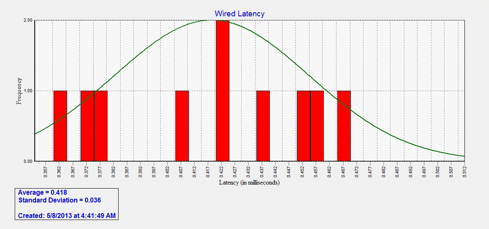
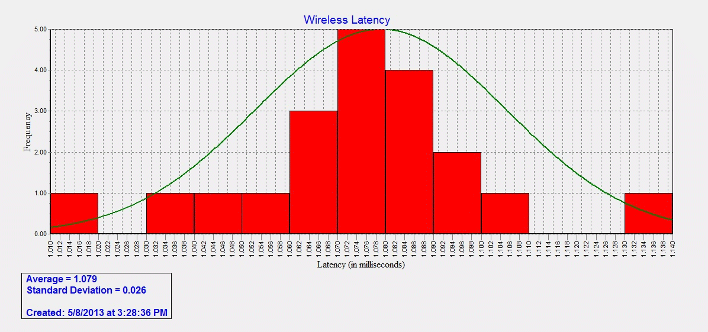

Is there a difference in mean wired LAN (Local Area Network) speed versus mean wireless LAN speed?
To collect our data, we used the command-line program ping. Our data set consisted of 2,000 individuals values recorded in milliseconds.
"Ping is a fundamental program that allows a computer to send a request to another computer somewhere else on the network or on the Internet in order to determine if the computer exists and is responding. A ping sends a packet of data to a specific address and waits for an appropriately named "pong" response."

| Mean | 0.433 |
| Standard Deviation | 0.029 |
| Minimum | 0.305 |
| Quartile 1 | 0.414 |
| Median | 0.438 |
| Quartile 3 | 0.455 |
| Maximum | 0.674 |

| Mean | 1.066 |
| Standard Deviation | 0.031 |
| Minimum | 0.874 |
| Quartile 1 | 1.050 |
| Median | 1.080 |
| Quartile 3 | 1.090 |
| Maximum | 10.60 |
| Wired | Wireless | |
| Mean | 0.433 | 1.066 |
| Standard Deviation | 0.029 | 0.031 |
| Minimum | 0.305 | 0.874 |
| Quartile 1 | 0.414 | 1.050 |
| Median | 0.438 | 1.080 |
| Quartile 3 | 0.455 | 1.090 |
| Maximum | 0.674 | 10.60 |